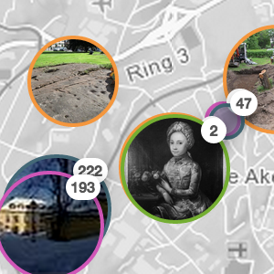

Kultur- og naturreise er et prosjekt og et nasjonalt løft for å øke tilgangen til offentlig informasjon og lokal kunnskap om kultur og natur. Dette tverretatlige samarbeidet under Kommunal- og moderinseringsdepartementet, Klima- og miljødepartementet og Kulturdepartementet legger til rette for at innhold i fagdatabaser skal gjøres tilgjengelig. Prosjektet er et samarbeid mellom Kulturrådet, Riksantikvaren, Riksarkivet og Kartverket. Innhold og formidlingsløsninger kan tas i bruk og videreutvikles av andre til nye tjenester; av nærings- og reiseliv, i friluftsliv og undervisning. Målet er å øke kunnskap om og skape engasjement for kulturminner og naturverdier.
Disse prototypene og kartløsningene er som en del av dette arbeidet utviklet med bistand fra Norkart i regi av Kultur- og naturreise. Løsningen er inspirert av og i ulike grader basert på åpne og nettleserbasert rammeverk og kartløsninger - blant annet Leaflet, CartoDB, Mapbox, Cesium, Turf og arbeidene til Bjørn Sandvik. Løsningene er fremdeles under utvikling og utover høsten vil det bli jobbet med justering av både funksjonalitet, grensesnitt og design i tillegg til testing og feilretting. Det vil også bli jobbet med å få inn nye kilder og med forbedringer for de datasett og kilder som allerede er inne. Til dette arbeidet setter vi stor pris på tilbakemeldinger, spørsmål og kommentarer.
Landsdekkende visning av sentrale datasett. Kulturminner, historie og fakta fra Kulturminnesøk (Riksantikvaren), Digitalt Museum, Universitetsmuseene, Digitalt fortalt, Lokalhistoriewike, Folketellingen 1910 (Digitalarkivet), Verneområder, Lokalhistoriewiki og Wikipedia.
Hele pilegrimsleden med alt relevant innhold langs denne. Et bredt utvalg kilder med tanke på både de som følger leden og de som ferdes i områder der leden går.
Velkommen til en guidet tur langs Gudbrandsdalsleden. Mens du beveger deg langs leden vil vi vise deg relevant innhold.
Innhold fra hele Telemark med fokus på ulike former for kulturminner og kulturminnerelatert innhold - data fra Kulturminnesøk, brukerregistrert innhold i Kulturminnesøk, Digitalt fortalt og Wikipedia.
Kart med fokus på ett område og spesielt på arbeidet som er gjort med produksjon og bearbeiding av innhold og samarbeidet med SNO om naturdata. Delvis en overlapp med Gudbrandsdalsleden, men en mulighet for å vise litt annet utvalg av innhold og en større bredde i innhold på grunn av begrensning til ett mer definert geografisk område.
Historiske vandreruter er et samarbeid mellom Den Norske Turistforening (DNT) og Riksantikvaren med mål om å øke kjennskapen til og bruken av gamle ferdselsruter med kulturhistoriske og friluftslivsmessige kvaliteter. Turistvegen over Folgefonna er en av de utvalgte rutene og her vises ruta sammen med data fra aktuelle kilder i nærheten av denne.
3D-visning av Turistvegen over Folgefonna - selve ruta sammen med data fra aktuelle kilder i nærheten av denne.
Historiske vandreruter er et samarbeid mellom Den Norske Turistforening (DNT) og Riksantikvaren med mål om å øke kjennskapen til og bruken av gamle ferdselsruter med kulturhistoriske og friluftslivsmessige kvaliteter. Flyktningeruta er en av de utvalgte rutene og her vises ruta sammen med data fra aktuelle kilder i nærheten av denne.
Brukergenerert og bearbeidet innhold langs turrunden Kjærlighetsstien gjennomg Gamlegata i Gvarv i Telemark
Stedsbegrenset demonstrator med spesiell fokus på kunst og arkitektur, men også innhold fra pilotarbeidet knyttet til Akerselva og integrasjon med andre lokale kilder.
Tematisk demo knyttet til folkemusikk i Bø og Sauherad
Demonstrator med fokus på Trondheim - innhold fra Digitalt fortalt, Kulturminnesøk, Trondheim byarkiv, Universitetsmueene, Digitalt Musuem og Wikipedia.
Historie og kulturminner langs Nidelva i Trondheim kommune
Historie og kulturminner langs Akerselva og ved DOGA
Historiske foto fra ulike kilder i hele landet
2. verdenskrig og krigens kulturminner. Eget kartgrunnlag basert på tjenesten Mapbox og innhold knyttet til 2. verdenskrig fra Digitalt Fortalt, Jernbanemuseet, Riksantikvaren, Wikipedia og Digitalt Museum.
Stavkirker og innhold knyttet til stavkirker fra Digitalt Fortalt, Jernbanemuseet, Riksantikvaren, Wikipedia og Digitalt Museum.
Stavkirker fra Riksantikvaren og Kulturminnesøk
Middelalderkirker fra Riksantikvaren og Kulturminnesøk
3D visning av kulturminner i Telemark
Eksempel på kulturminner langs grensen mellom Norge og Sverige
Det er som en del av arbeidet med å sette opp ulike kartvisninger og demonstratorer også utviklet et web-grensesnitt der du enkelt kan generere ditt eget kart. Her kan du velge område, hvilke datasett du vil ha med og hvilket kartgrunnlag du ønsker å bruke.
Det er i dette rammeverket og disse løsningene gitt tilgang til en rekke ulike datasett. Noen av dem er integrert direkte, mens andre er gjort tilgjengelig ved hjelp av ulike aggregeringsløsninger.
Den viktigste aggegeringsløsningen som er er brukt er Norvegiana. Dette er en tjeneste som forvaltes av Kulturrådet og som gir samlet tilgang til data fra en rekke datasett. I denne løsningen er det gitt tilgang til stedfestede data fra Digitalt fortalt, Universitetsmuseene (Musit), Industrimuseum, data fra tjenesten Kystreise og Digitalt Museum.
Riksantivaren har ulike tjenester som er gjort tilgjengelig. Fagdata fra Askeladden og Kulturminnesøk og bilder fra tjenesten Kulturminnebilder er gjort tilgjengelig ved hjelp av Riksantikvarens SPARQL-grensesnitt. Brukerregistrerte kulturminner fra Kulturminnesøk er gjort tilgjengelig ved hjelp av deres Husmann API.
Den stedfestede folketellingen fra 1910 fra Riksarkivet her gjort tilgjengelig ved hjelp av Digitalarkivets API
Stedfestede artikler fra Wikipedia - bokmål og nynorsk - er hentes fra Wikipedia sitt eget API for uthenting av stedfestede artikler. Et tilsvarende API er gjort tilgjengelig av Norsk Lokalhistorisk institutt for uthenting av stedfestede artikler fra Lokalhistoriewiki.
En del innhold er lagt inn i ulike løsninger for lagring og tilgjengeliggjøring av stedfestede data - uten en direkte kobling til original kilde. Dette er gjort for å vise muligheter ved integrasjon av ulike datatyper og i de tilfeller der det ikke var praktisk mulig å hente data direkte. Et statisk uttrekk av artsobservasjoner er gjort tilgjengelig ved hjelp av Norvegiana. Verneområder fra Miljødirektoratet og Oppdag Groruddalen fra Byantikvaren i Oslo og Nasjonalbibliotekets bygdebøker fra Telemark er gjort tilgjengelig ved hjelp av CartoDB. Ulike formidlingsrettede fortellinger er gjort tilgjengelig ved hjelp av tjenesten Digitalt fortalt - dette gjelder innhold fra Nasjonalt Pilegrimssenter, Byantikvaren i Oslo og Arkivverket.
Jernbanemuseet sitt innhold knyttet til 2. verdenskrig er hentet ut fra tjenesten Kulturpunkt.
Historiske foto er gjort tilgjengelig fra ulike kilder. Et stort antall er gjort tilgjengelig fra Digitalt Museum og en rekke mindre samlinger av stedfestede foto er gjort tilgjengelig fra Flickr -Trondheim byarkiv, flyfoto fra Vestfoldmuseene, krigsbilder fra Arkiv i Nordland, foto fra Riksarkivet, Nasjonalbiblioteket, NVE, Oslo byarkiv og Perspektivet Museum.
Pilegrimsleden er gjort tilgjengelig fra Nasjonalt Pilegrimssenter og det er gjort mulig å ta i bruk alle stier og ruter fra ut.no.
Åpent tilgjengelige kart fra Kartverket er brukt som bakgrunnskart. I tillegg er det brukt kart basert på OpenStreetMap og tjenesten Mapbox. Terrengdata for visning av 3D-kart er basert på data fra Kartverket og Cesium.